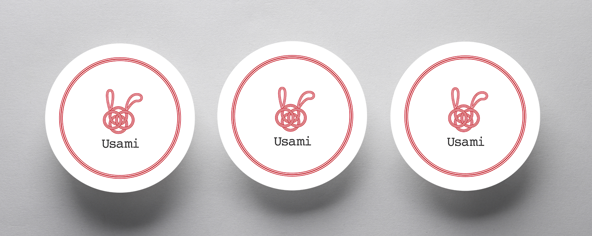

はじめに
今回は、兵庫県豊岡市で結婚のお祝い、お返しやお歳暮などのギフト用品を販売されている株式会社うさみ様のロゴとECサイトのリニューアル制作についてご紹介します。
うさみ様は約70年に渡り豊岡の地で地域と共に歩んでこられた会社です。どんな小さなご要望にでも真摯に向き合い、丁寧で誠実なサービスを提供されています。
今回のリニューアルサイトは、うさみ様のこれまでの歩みや大切にしてきた想いを形にし、「これから先へ」とつないでいく役割を担いたい＿＿そんな想いを込めて、このサイトを制作しています。
はじまりは小さなふとん屋
私にとって「うさみ」は実家であり、生まれた時からずっと側にある存在です。うさみのはじまりは祖母と祖父がデパートの一角で営んでいた小さなふとん屋でした。
幼い頃の記憶には、祖父がお客様と丁寧に言葉を交わす姿や、赤ちゃんの命名書を一文字ずつ丁寧に書いていた姿が残っています。祖母の柔らかく親しみのある接客、そして従業員の方々の美しく整えられた包装と心のこもった対応。そうした日常の積み重ねの中で、人と向き合い、喜んでいただくことの大切さを、自然と感じ取ってきました。
祖父にとって、祖母にとってうさみとはどんな存在か。母や父、従業員の方にとってはどんな存在か。これからどうなって欲しいか。このサイトを制作するにあたり、改めて聞くこととしました。
制作して見えてきた
私にとって「うさみ」は実家であり、生まれた時からずっと側にある存在です。うさみのはじまりは祖母と祖父がデパートの一角で営んでいた小さなふとん屋でした。
幼い頃の記憶には、祖父がお客様と丁寧に言葉を交わす姿や、赤ちゃんの命名書を一文字ずつ丁寧に書いていた姿が残っています。祖母の柔らかく親しみのある接客、そして従業員の方々の美しく整えられた包装と心のこもった対応。そうした日常の積み重ねの中で、人と向き合い、喜んでいただくことの大切さを、自然と感じ取ってきました。
祖父にとって、祖母にとってうさみとはどんな存在か。母や父、従業員の方にとってはどんな存在か。これからどうなって欲しいか。このサイトを制作するにあたり、改めて聞くこととしました。

ロゴについて
従来のロゴは、「うさぎ」をモチーフにした親しみのあるロゴでした。「人との縁を大切にしたい」「心からおめでとう、ありがとうの気持ちを伝えたい」という皆さんの思いに対して、お祝いで使われる「水引」で表現しました。贈る人と受け取る人の心をつなぎ、大切な想いを届けたいと願いを込めたロゴになりました。
水引きには、「結び方」によって、込められる願いや使い道が大きく変わる文化があります。「あわじ結び」を基調とした理由は、ほどけにくい結び方であることから、お客様とのご縁が長く続いていくようにという想いを込めたロゴとなりました。
オンラインでも対面のような接客
今回のECサイトリニューアルにあたり、大切にしたのは、お客様がスムーズに注文ができるようなサイトにすること。元のサイトでは商品数やカテゴリが多く、逆にユーザーが目的の商品に辿り着くまでに時間がかかることが課題でした。また、贈る際のマナーや「相場」に関する情報がサイト内に不足しており、ユーザーが疑問を解決するために他サイトへ検索に出てしまい、そのまま離脱につながっていました。実店舗なら、お客様の疑問が生じたタイミングで、個人に合わせた接客をすることができますが、オンラインでは対応が難しいと感じます。そのため、のしの解説や特集コンテンツをサイト内に組み込み、「調べる」から「購入」までをこのサイト一つで完結できる設計にこだわりました。

制作を振り返って
今回の制作を振り返り、改めてこれまで家族や従業員の人が守ってきた時間や大切にしている思いに触れることができました。これまでは、表面的なデザインの表現に意識が向きがちでしたが、実際にクライアントの方とのコミュニケーションを通じて、時間を重ねて、一つひとつ読み解いていくことで、求められている内容に近づいていくのではないかと学びました。そして、WEB制作とは作って終わりではなく、実際にお客様の使いやすさや売り上げ状況、リアクションやクライアントの方の「もっとこうしたい」「こんな内容があるといいな」を修正や改善を重ねて、お客様と一緒に未来を作っていくことでより良いものを求め続けられると感じました。